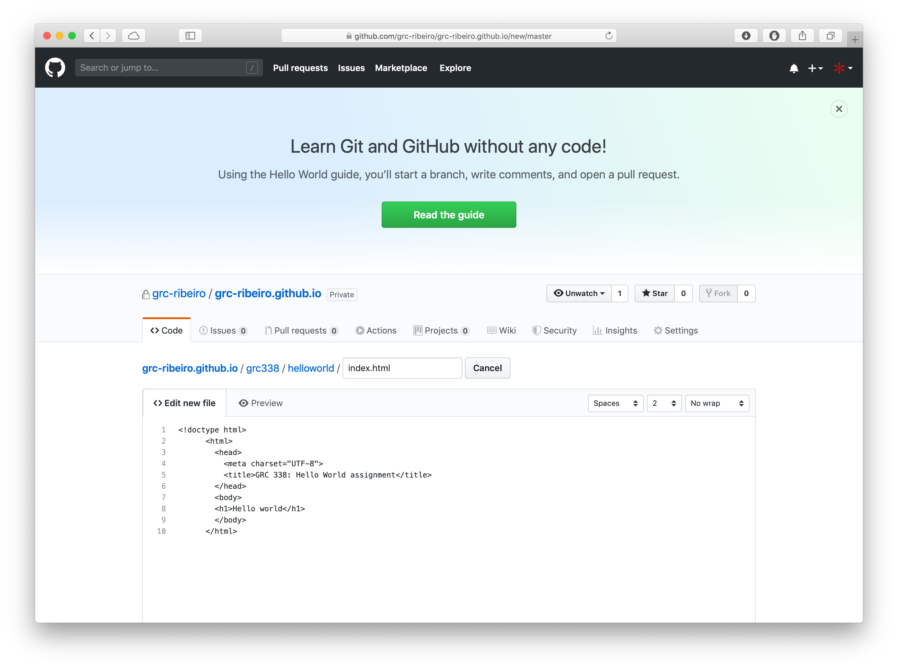
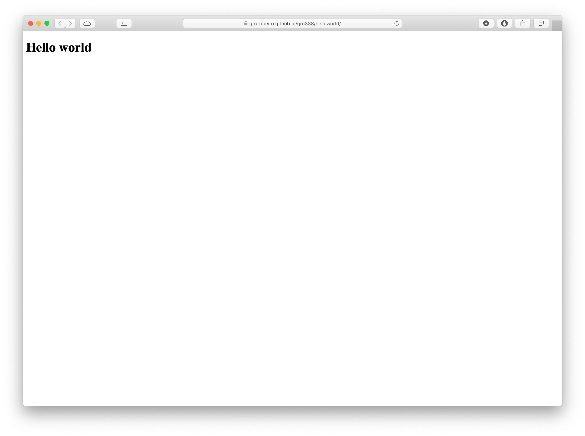
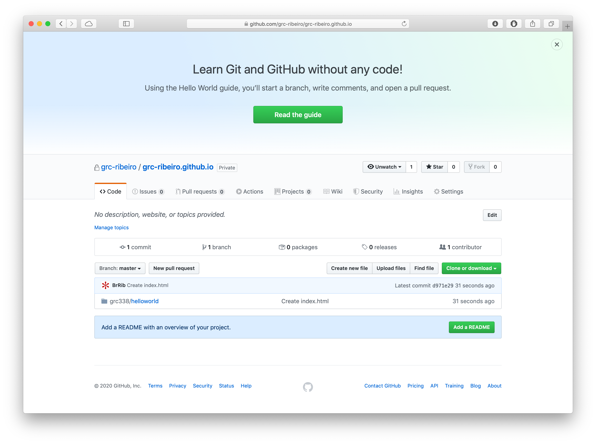
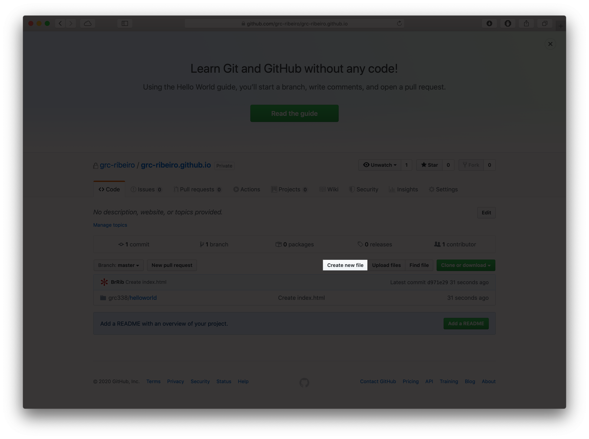
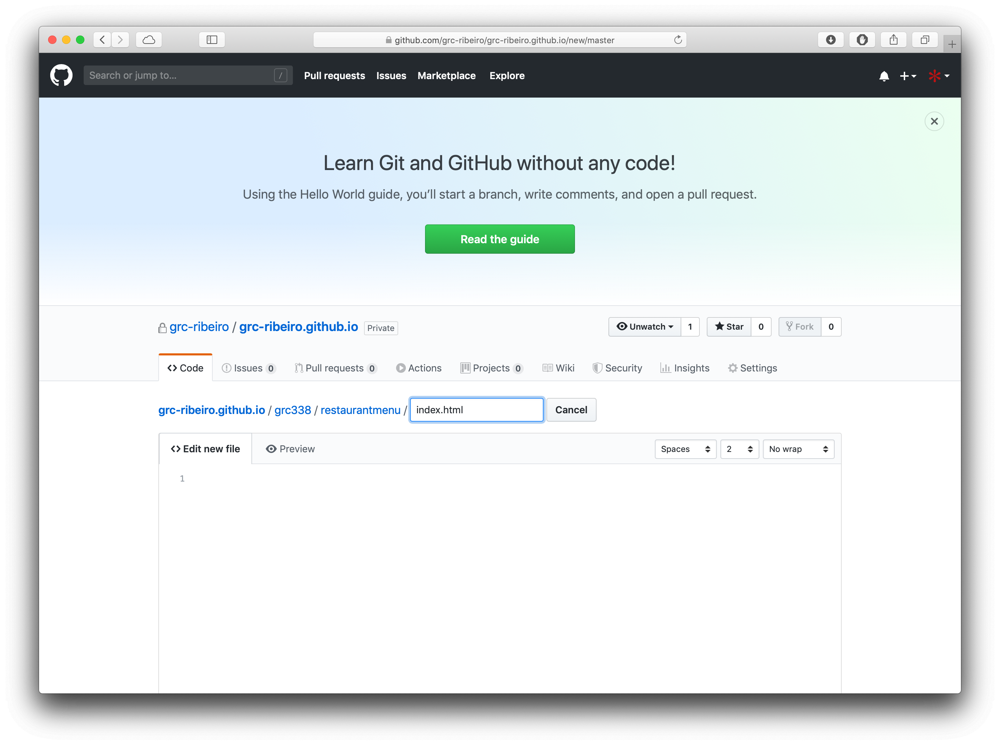

All our assignments will be inside the folder grc338 in your repository. The way you create the new grc338 folder is by typing grc338 in the field that reads Name your file…. But you want to add a forward slash (/) right after that, so GitHub understands it’s a folder.

Then, you do it again with the last part of the URL in the assignment instruction. For the first assignment, it’s helloworld. Once again, you add a forward slash (/) right after that, so GitHub understands it’s a folder.

Finally you name your actual file index.html (without the forward slash, because it’s not a folder, it’s a file).

Then, you copy this text and paste into the file:
<!doctype html>
<html>
<head>
<meta charset="UTF-8" />
<meta name="viewport" content="width=device-width, initial-scale=1" />
<meta http-equiv="Cache-Control" content="no-cache, no-store, must-revalidate" />
<meta http-equiv="Pragma" content="no-cache" />
<meta http-equiv="Expires" content="0" />
<title>GRC 338: Hello world assignment</title>
</head>
<body>
<h1>Hello world</h1>
</body>
</html>

Scroll down and click on the green button that reads Commit new file. You gotta commit!

Navigate back to the folder you were working now and copy the URL to test on a new tab or window of your browser.


Don’t forget to submit your URL to Canvas.
That’s it for the Hello world assignment!
First, go to the assignment instructions and copy the URL after the first slash (/).


Now, log in GitHub and go to the repository named username.github.io.

Click on Create new file.

Paste the part of the URL that you copied from the assignment instructions in the first step of this short tutorial as the name of your file you’re creating.
Include a new slash (/) at the end of it, so GitHub understands it’s a folder.

Create the file index.html

Scroll down and click on Commit new file.

Click on Upload files.

Drag and drop your files or click on choose your files to navigate to them on your computer.

click on Commit new file again.
You won’t have to submit anything on Canvas, but please check the list of links and click on your name to make sure it’s working.